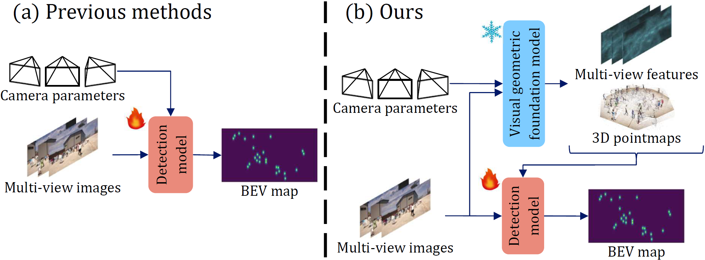
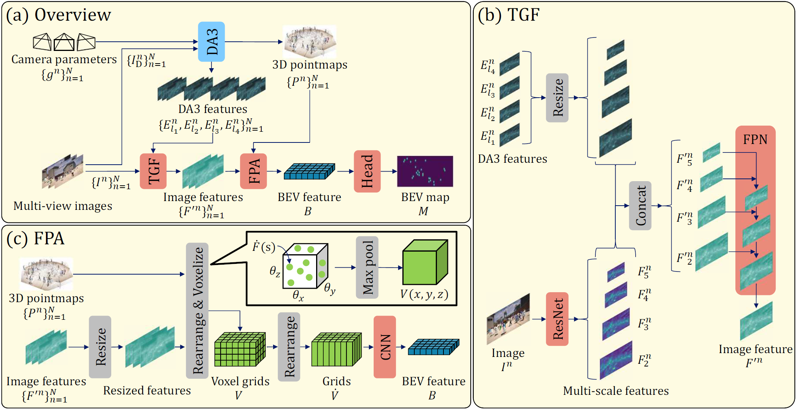

Multi-View Pedestrian Detection (MVPD) aims to detect pedestrians in the form of a bird's eye view map from multi-view images. Recent MVPD methods adopt a unified framework that projects 2D image features into a 3D world space and aggregates them into a single feature. Although they are effective, they struggle to generalize to unseen camera configurations during training due to two main issues. First, they are difficult to capture accurate visual geometry across views in unseen camera configurations. Second, they make detection models highly dependent on distortion patterns during training arising from their image feature projection. To address these, we leverage a visual geometric foundation model and propose MV2GF. This foundation model has exhibited strong generalization in capturing visual geometry across views and predicting accurate 3D attributes in diverse camera configurations. MV2GF fuses task-specific features with general-purpose geometric features extracted by the foundation model to effectively capture the visual geometry even in unseen camera configurations. Furthermore, MV2GF projects each pixel in the image features to an appropriate 3D location using 3D pointmaps predicted by the foundation model, preventing the detection model from depending on distortion patterns during training. Our experiments demonstrate the effectiveness of leveraging a visual geometric foundation model for MVPD and that MV2GF generalizes better than existing methods.

MV2GF leverages multi-view features and 3D pointmaps from a visual geometric foundation model (e.g., Depth Anything 3) through two newly introduced components: Task-specific and Geometric information Fusion (TGF) and Feature Pointmap Aggregation (FPA).

@inproceedings{yamane2026mv2gf,
author = {Taiga Yamane and Satoshi Suzuki and Ryo Masumura and Shota Orihashi and Tomohiro Tanaka and Mana Ihori and Naoki Makishima},
title = {MV2GF: Multi-view Pedestrian Detection with a Visual Geometric Foundation Model},
booktitle = {ECCV},
year = {2026}
}